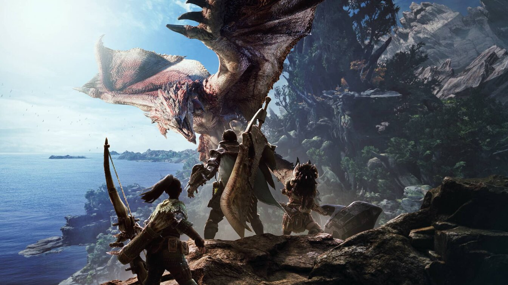
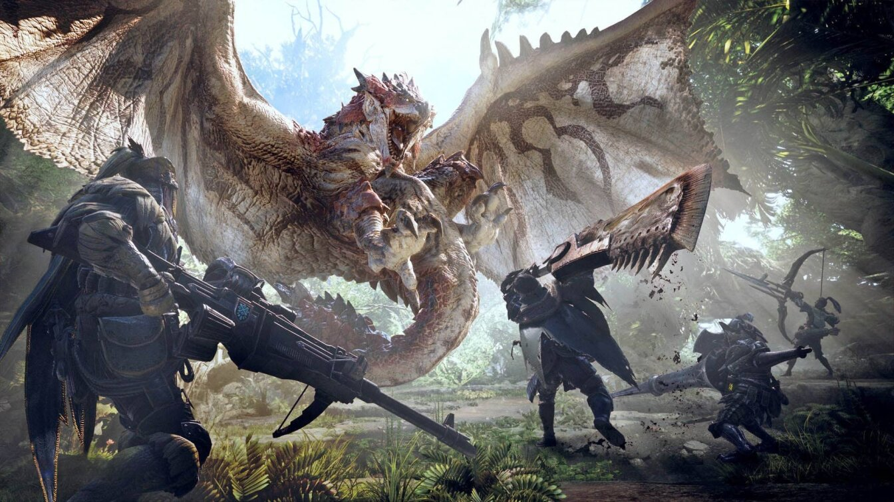
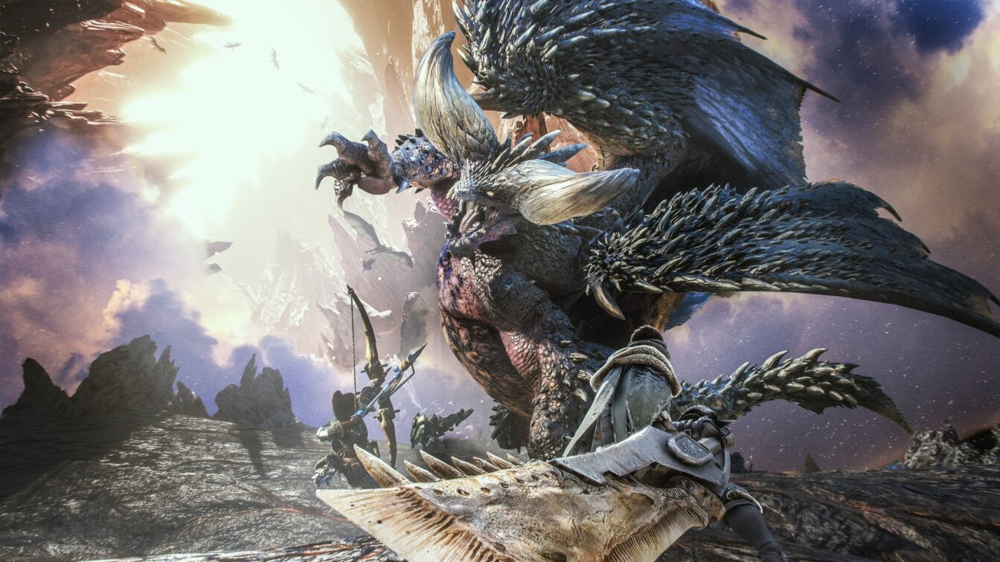
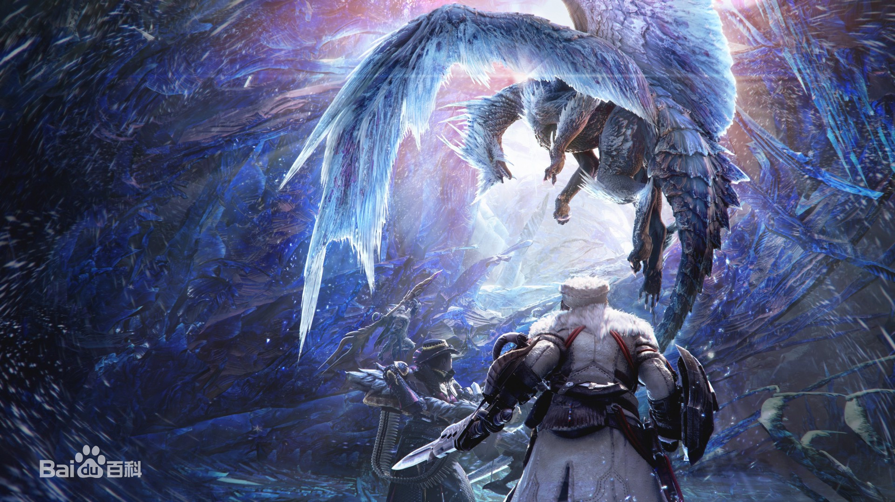

《怪物猎人：世界》英文名Monster Hunter:World，是卡普空开发制作的第三人称角色扮演类动作游戏，于2018年1月16日在PS4、Xbox One平台发售，2018年8月10日登陆PC端Steam平台，为《怪物猎人》系列作品之一。
在游戏中，玩家将化身成猎人，接受任务狩猎生活栖息在各种环境中的魔物。利用狩猎魔物取得的材料，制作更强的武器和防具，挑战更强大的魔物。




每十年一度，古龙们都会渡海迈向遥远彼方的新大陆。 为了揭开这个被称为“古龙渡”的奇妙现象，公会组织“新大陆古龙调查团”，多次派调查团前往新大陆。 今次已是第五次派遣，为了追踪渡海的古龙熔山龙，玩家所扮演的猎人来到了这片新大陆进行调查！

| 种类 | 介绍 |
|---|---|
| 大剑 | 攻击距离长且一击威力高的武器。因挥舞及移动很慢，故每次攻击后都必须注意躲避敌方。 |
| 太刀 | 擅长流畅动作与连续攻击的武器。移动速度快，但不能防御。 |
| 片手剑 | 行动与攻速轻快的轻量武器。虽然可以防御，但是盾的性能不高。拔刀状态下仍然使用道具。 |
| 双剑 | 擅长怒涛连续攻击的武器。动作快速、容易上手，但不能防御。 |
| 大锤 | 兼具破坏力与机动力的重量级打击武器。攻击瞄准命中头部可使怪物进入昏厥状态。 |
| 狩猎笛 | 可对全体成员附加各种效果的打击武器。通过演奏提高攻击力、回复体力等等来发挥力量。 |
| 长枪 | 拥有最顶级防御性能的武器。以突刺攻击所产生的破绽少，攻击距离长，故可边确保自身安全，边稳定地战斗。 |
| 铳枪 | 附加了炮击性能、比长枪更具攻击性的武器。拥有强力的炮击且防御能力也很高，但攻击有独特的技巧，要活用铳枪需累积相当的经验。 |
| 斩斧 | 可变形为斧模式与剑模式两种型态进行攻击的武器。可使用攻击距离较优的斧模式模式进行牵制，再以攻击速度快速的剑模式进行猛攻。 |
| 盾斧 | 可变形为动作敏捷的剑模式，与威力高的斧模式。两种型态进行攻击的武器。可使用能防御的剑模式进行周旋，再以高威力的斧模式造成大伤害。 |
| 操虫棍 | 可操纵名为猎虫的虫，使用采集的萃取液强化自身的武器。若使用武器进行跳跃，就算不利用高低差也能够在空中行动。 |
| 轻弩炮 | 可发射弹药从远距离攻击怪物的武器，机动性优秀、可快速射击与擅长回避。 |
| 重弩炮 | 可发射弹药从远距离攻击怪物的武器，可击出高威力弹药。 |
| 弓 | 可进行各种射击的中距离武器。可通过蓄力箭瞄准攻击怪物的弱点来发挥最大的力量。 |